В Лагере можно встретить различных жителей (НИПов), каждый из которых имеет собственное предназначение и специальность. Большая часть из них появится лишь после разблокировки определенных зданий в Крепости. Снизу вам будет приведён полный список НИПов, которых вы можете встретить. Также, каждый из них имеет свою категорию, в которой вы сможете узнать больше требуемой информации.
| НИПы, которых можно встретить в Лагере или Аванпосте | |||||||
|---|---|---|---|---|---|---|---|
|
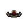 Наставник |
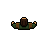 Торговец |
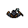 Кузнец |
|||||
| Раса | Человек | Раса | Человек | Раса | Человек | ||
| Специальность | Обучение, возвращение в Лагерь | Специальность | Торговля и продажа | Специальность | Слияние и ковка предметов | ||
| Доп. Нахождение | Нельзя встретить в Аванпосте (спец. Локация) | Доп. Нахождение | Встречается в Аванпосте (спец. Локация) | Доп. Нахождение | Нельзя встретить в Аванпосте (спец. Локация) | ||
| Узнать больше | Узнать больше | Узнать больше | |||||
|
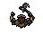 Зверолов |
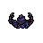 Мистик |
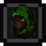 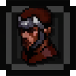 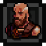 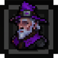 Наёмники |
|||||
| Раса | Человек | Раса | Человек | Раса | Человек | ||
| Специальность | Смена и улучшение питомцев прямо в Лагере | Специальность | Удаление/"забывание" перков | Специальность | Найм, помощь в зачистке этажей | ||
| Доп. Нахождение | Нельзя встретить в Аванпосте (спец. Локация) | Доп. Нахождение | Нельзя встретить в Аванпосте (спец. Локация) | Доп. Нахождение | Сопровожд. Торговца в Аванпосте, но не интерактивны | ||
| Узнать больше | Узнать больше | Узнать больше | |||||
Впервые появляется в тренировочной комнате, ознакамливая игрока с основами игры и проводя Обучение. Позже появляется в Лагере, при взаимодействии предлагает игроку вернутся в Лагерь вместе с Караваном, продавая всё снаряжение в инвентаре (кроме надетого и Пассивных Предметов)
Появляется в Лагере только после постройки здания "Приют Торговца". Если здание не построено - оставляет соответствующую табличку с надписью. Также встречается в Аванпосте.
Торговцу можно продавать любые предметы (кроме предметов с нулевой стоимостью). По мере улучшения "Приюта Торговца" цена продажи предметов определенных категорий становится выгоднее, а также появляется возможность быстрой продажи и покупки расходников.
Стоимость предметов у Торговца зависит от этажа и уровня "Приюта Торговца". Базовая цена — от 500 золотых, растёт на 50 монет за этаж (макс. прибавка — 500–12 000 золотых). На 5‑м уровне Приюта база — 750 золотых, надбавка — 75 монет за этаж. При недостаточном уровне Приюта цена продажи снижается вдвое: для артефактов и материалов нужен 1‑й уровень, для используемых предметов — 2‑й, для экипировки — 3‑й. В обычных условиях предметы продаются на 50 % дешевле базы, экипировка — на 60 %, пассивные предметы — втрое дороже.
После улучшения "Приюта Торговца" до 4-го уровня, Торговец начинает продавать следующие предметы:
Улучшение "Приюта Торговца" до 5-го уровня расширяет ассортимент Торговца, добавляя следующие предметы:
Рядом с Торговцем находится принадлежащий ему Сундук. С этажами качество этого сундука также возрастает. Если повредить Сундук - Торговец сообщит вам, что не стоит этого делать. Если вы сломаете Сундук - Торговец нападет на вас, при этом обычно он не убивает членов Гильдии, потому прекратит сражение если ваше ОЗ упадет до критического уровня (15% от макс. ОЗ +5 ед.). Итог битвы может быть различным:
Почти во всех случаях после нападения на Игрока, тот получает штраф к стоимости покупаемых и продаваемых товаров. Штраф снимается лишь при завершении забега, а также в ситуации, когда Торговец вообще не получил урона и вернул все свои предметы обратно.
Появляется в Лагере только после постройки здания "Кузня". Если здание не построено - на его должном месте останется лишь неотапливаемая Печь. Не встречается в Аванпосте.
Изначально Кузнец сможет только совмещать два Обычных предмета в один Особый, без слияния некоторых артефактов и зелий. Прокачка "Кузни" повышает макс. качество, до которого можно совмещать предметы. Остальные улучшения Кузнеца происходят при разблокировке других зданий, ознакомится с которыми можно на страницах: Крепости; Лагеря; Кузни
Кузнец может совмещать и заковывать разные предметы. Для слияния используется снаряжение одного типа (не выше Легендарного качества), а для ковки нужны предметы выше Обычного качества. Ковка позволяет убрать эффект с предмета или наложить.
Оплата монетами зачастую выгоднее, чем оплата кристаллами.
Полные подробности о Кузне вы можете увидеть здесь.
Появляется в Лагере после постройки здания "Лачуга Зверолова" в Крепости. Не встречается в Аванпосте.
Зверолов позволяет менять, улучшать и разблокировать новые навыки питомцев прямо в Лагере. Помимо этого, вместе с ним появляется загон, в котором находятся все купленные персонажем питомцы, к каждому из которых можно проявить ласку.
Информацию о всех питомцах вы можете узнать здесь.
Появляется в Лагере только после того, как любой персонаж впервые получит 6 перков одновременно (4 в бесплатной версии). Нельзя встретить в Аванпосте.
Мистик помогает персонажу "Забывать" любой ранее полученный перк за 100 кристаллов. Каждое последующее "забывание" будет стоить на 100 кристаллов дороже.
С определенным шансом в Лагере можно встретить не только Торговца, Кузнеца или Наставника, но еще и Наёмников, они нанимаются за монеты или кристаллы (монеты, зачастую, выгоднее) и всего их 4 разновидности. Сопровождают Торговца в Аванпосте, но не имеют интерактива.
|
Наёмник-Воин |
Наёмник-Лучник |
Наёмник-Берсерк |
Наёмник-Маг |
|||||||
|---|---|---|---|---|---|---|---|---|---|---|
| Уровень | 15 | Уровень | 15 | Уровень | 30 | Уровень | 30 | |||
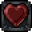 ОЗ |
ОЗ | ОЗ | ОЗ | |||||||
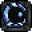 ОМ |
ОМ | ОМ | ОМ | |||||||
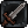 Урон |
Урон | Урон | Урон | |||||||
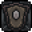 Защита |
Защита | Защита | Защита | |||||||
| Ближний бой: | Существо может сражаться врукопашную | Дальний бой: | Существо может вести бой на расстоянии | Ближний бой: | Существо может сражаться врукопашную | Дальний бой: | Существо может вести бой на расстоянии | |||
| Страж: | Может блокировать удары | |||||||||